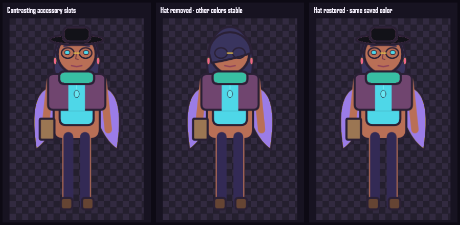

TASK-020 · Accessory palettes
Stable colors.
No renumbering.
Accessories use semantic slot addresses—hat, face, ear, neck, handheld, back, waist, and charm—so equipping or removing one item never transfers a color to another.
Equipped · removed · restored
Hat changes do not move other colors

Approve Task 020 independently
- Hat, glasses, earrings, scarf, handheld, back item, and charm can differ.
- Removing the hat leaves every other accessory color unchanged.
- Restoring the hat restores the saved hat color.
- Unused Waist accessory color is retained as a harmless no-op.